BIOS Configuration Steps
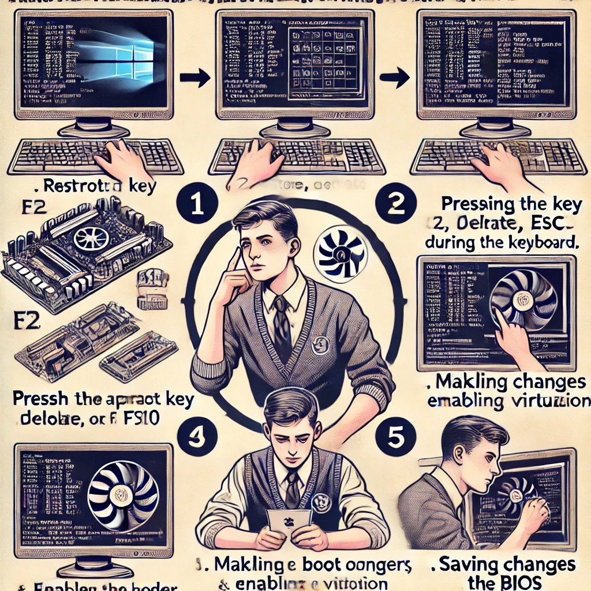
Section Breakdown:
This guide will help you configure the BIOS settings on your Dell Precision 3480.
Step 1: Access the BIOS
- Restart your computer.
- Press F2 repeatedly to enter the BIOS setup.
Step 2: Overview Page
You should see an overview page with your system information.
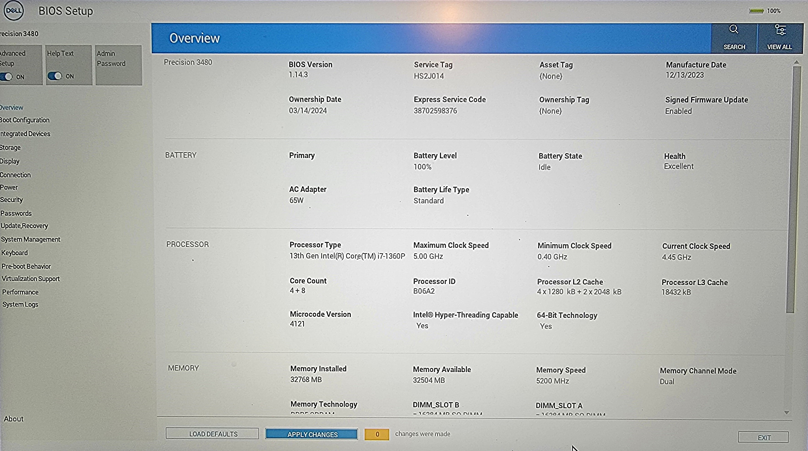
Step 3: Disable Secure Boot
- Navigate to the Boot Configuration tab.
- Locate the Secure Boot section.
- Click on Secure Boot to disable it.
- Confirm the changes by selecting Yes.
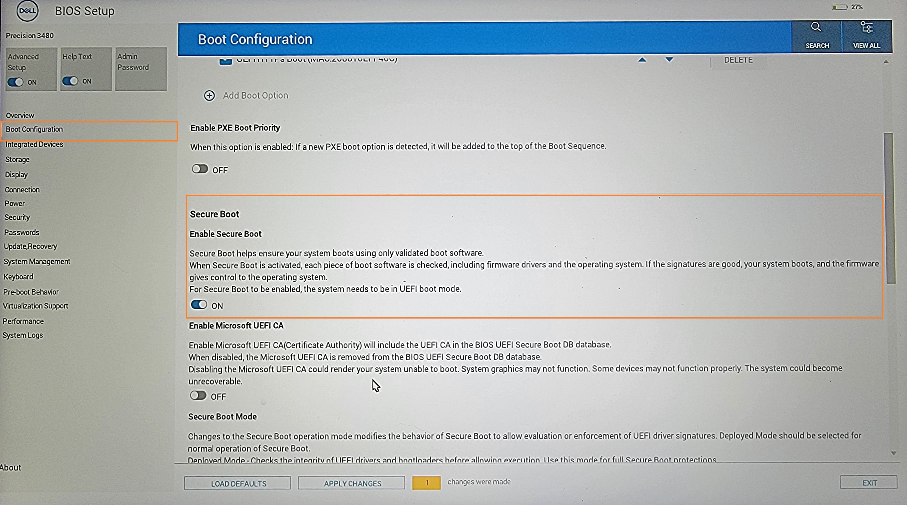
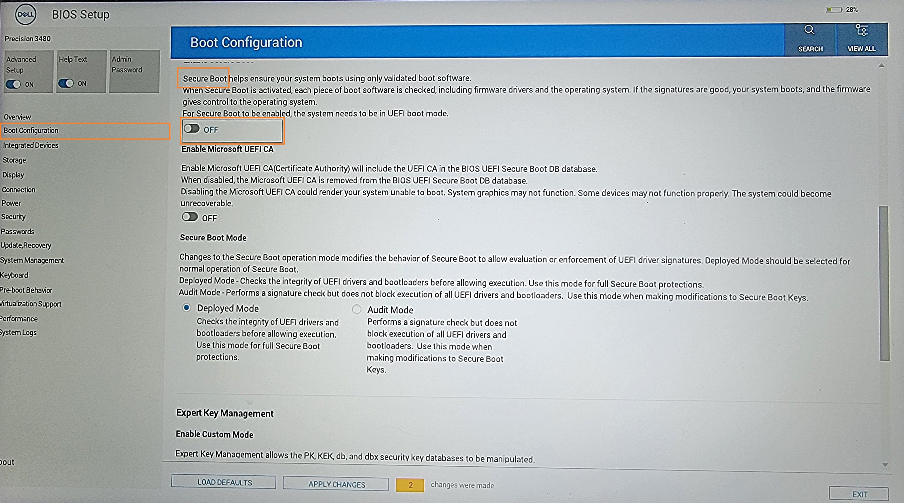
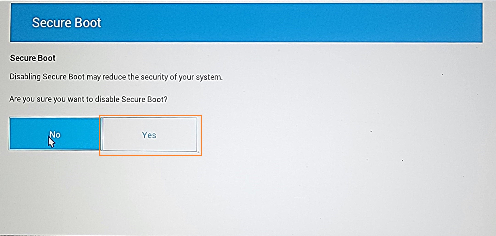
Step 4: Change SATA Operation
- Navigate to the Storage tab.
- Select SATA/NVMe Operation.
- Change the setting from RAID On to AHCI/NVMe.
- Confirm the changes by selecting Yes.
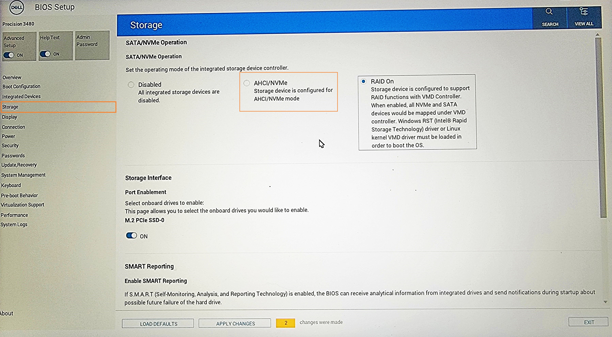
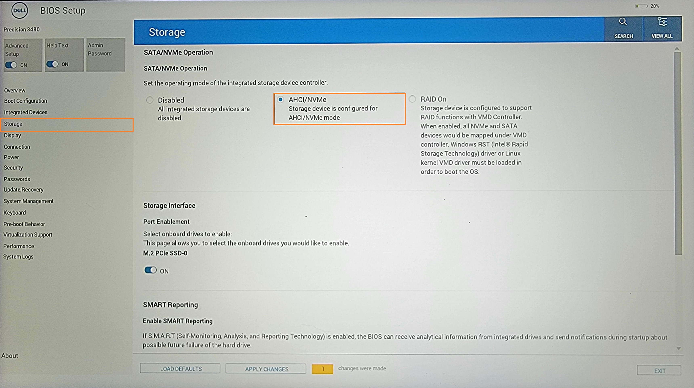
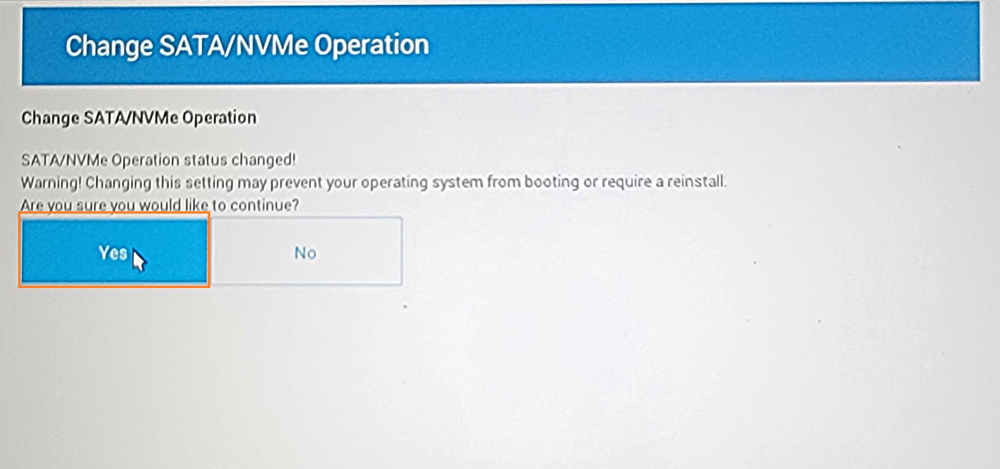
Step 5: Apply Changes
After making all changes, click Apply Changes.
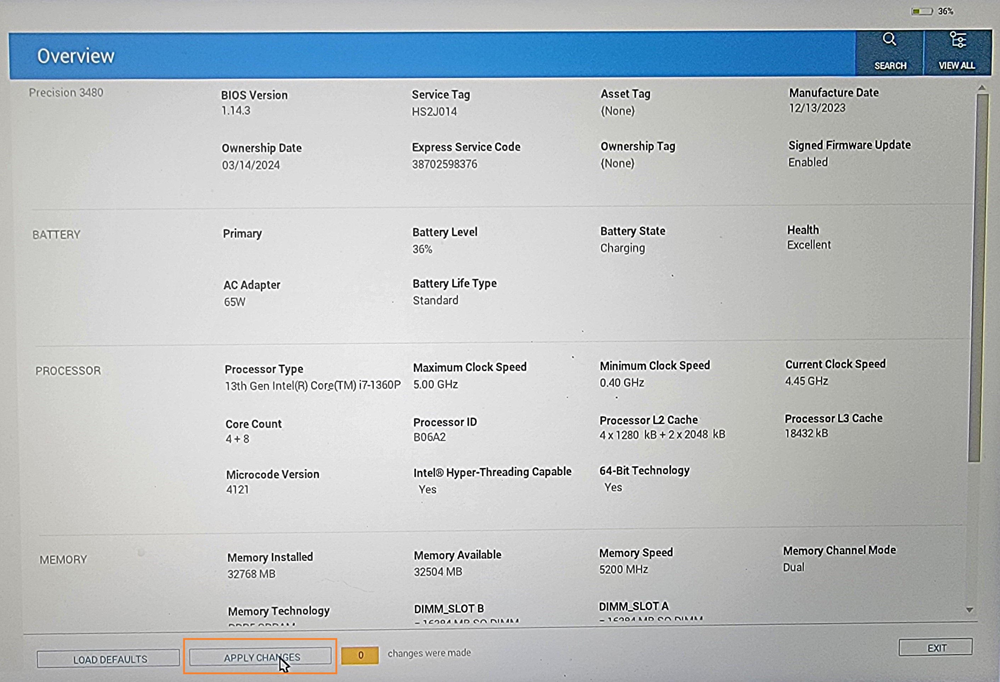
Step 6: Exit BIOS
- Click Exit to leave the BIOS setup.
- This will Restart your computer.
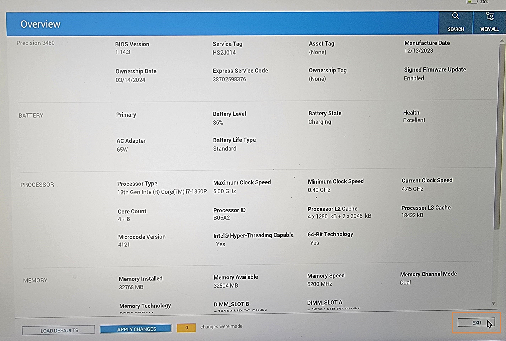
Step 7: Select Boot Device
- Press F12 repeatedly to enter the BIOS setup.
- Navigate to the One-Time Boot Settings tab.
- Select UEFI USB Flash Memory as the boot device.
- Double Click on the UEFI USB Flash Memory (you can also press Enter once it's selected).
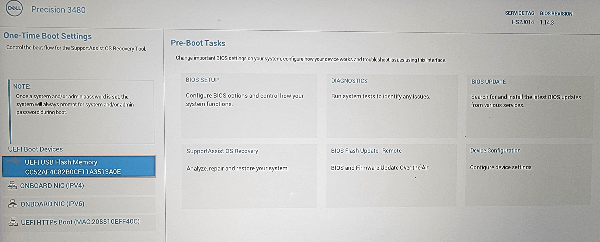
Your BIOS configuration should now be complete.
QuickLinks: